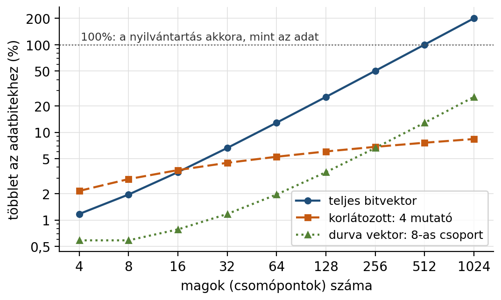

A szimatoló protokoll abból él, hogy mindenki mindent lát. Ez két magnál ingyenes, hatvannégynél már nem. Tegyük fel – ez feltevés, nem mérés –, hogy egy 64 magos chipen minden mag másodpercenként 20 millió koherenciakérést küld. Ekkor minden cache-vezérlőnek a másik 63 mag kérését kell megvizsgálnia másodpercenként, vagyis egy 1 GHz-es vezérlőnek ciklusonként többet, mint egyet. A közös buszon pedig, ha minden kérés egy 64 bájtos sort mozgat, GB/s adatforgalomnak kellene egyetlen vezetékköteget átlépnie, sorban.
Közben a tipikus kérés alig érint valakit: egy privát adat soránál senki másnak nincs dolga vele (MESI és MOESI). A buszra kiabálás tehát többnyire fölösleges. A megoldás: legyen egy nyilvántartás, amely tudja, ki tartja az adott sort, és az üzenet csak hozzá menjen.
Képzelj el egy könyvtárat, ahol a könyvtáros minden kötetről felírja, kinél van másolat. Aki olvasni akar, a könyvtárostól kér; aki bele akar írni, előbb a könyvtáros szól a másolatot tartóknak, hogy dobják el. Senki nem kiabál végig a termen. Ez a directory (könyvtár) alapú koherencia.
A nyilvántartás a rendszerben szét van osztva: minden sornak van egy otthoni csomópontja (home node), általában annál a memóriavezérlőnél, ahol az adat lakik. A csomópontok pont–pont hálózaton küldenek üzenetet (a topológiákat Összeköttetések és NUMA tárgyalja). Egy tranzakciónak legfeljebb három szereplője van: a kérő, az otthon, és a tulajdonos vagy az osztozók.
Az animáció egy írási hibát mutat négy csomóponton: N1 és N2 olvasásra tartja a sort, N3 írni akar. Kövesd a nyilakat: az 1. lépésben N3 az otthonhoz fordul, a 2. lépésben az otthon egyszerre küldi N3-nak az adatot és N1-nek, N2-nek az érvénytelenítést, a 3. lépésben a két osztozó közvetlenül N3-nak nyugtáz.
Definíció. A directory blokkonként egy bejegyzést tart nyilván; a blokk otthoni csomópontja a példánkban , ahol a blokkméret, a csomópontok száma. A bejegyzés tartalma:
A cache-ekben marad az MSI három állapota; a directory a cache-ek összesített képét tárolja. Az invariáns az SWMR-ből következik: M állapotnál pontosan egy bit áll, S-nél a tényleges tartók mind szerepelnek a vektorban. A fordítottja nem igaz mindig: ha egy mag csendben kiszorít egy S sort, a bitje bent maradhat.
| üzenet | küldő → címzett | jelentés |
|---|---|---|
GetS |
kérő → otthon | olvasni szeretném |
GetM |
kérő → otthon | írni szeretném (kizárólagos jog) |
Data / AckCount |
otthon vagy tulajdonos → kérő | adat (és a várt nyugták száma) |
Inv |
otthon → osztozó | dobd el a másolatot |
Inv-Ack |
osztozó → kérő | eldobtam |
Fwd-GetS, Fwd-GetM |
otthon → tulajdonos | küldj adatot a kérőnek |
Data-WB, PutM |
tulajdonos → otthon | visszaírás |
Négy tipikus eset (a hálózati ugrásokat számoljuk, feltéve, hogy a szereplők különböző csomópontok):
GetS → Data. Két ugrás.GetS
→ Fwd-GetS a tulajdonosnak → Data a kérőnek,
és párhuzamosan Data-WB az otthonnak. Három
ugrás (3-hop), négy üzenet.GetM → Data
(benne a
nyugtaszám) és
darab Inv →
darab Inv-Ack. Három ugrás,
üzenet.GetM →
Fwd-GetM → Data a régi tulajdonostól. Három
ugrás, három üzenet.Ha a kérő már osztozó (felfokozás), adat helyett csak az
AckCount megy, és a kérő nem kap Inv-et:
osztozó esetén
üzenet.
Az SWMR-invariáns szerint a kérő csak akkor írhat, ha minden más másolat megszűnt. Ezért meg kell várnia a nyugtákat; ha a nyugta egyenesen hozzá jön, egy ugrást spórol ahhoz képest, mintha az otthon gyűjtené be és küldene engedélyt. A régi tulajdonos is közvetlenül a kérőnek ad adatot. Egy egyszerűbb, négyugrásos változatban a tulajdonos az otthonnak küldi az adatot, az otthon pedig a kérőnek – ez eggyel lassabb, de könnyebb helyesen megtervezni.
Buszprotokollnál a busz döntötte el a sorrendet. Itt az otthon a sorosító pont: egy blokkra egyszerre egy tranzakciót intéz, a többi kérés várakozik vagy visszautasítást kap, amíg a folyamatban lévő le nem zárul. A valódi protokollokban ezért az otthonban is vannak átmeneti állapotok, a hálózatban pedig az üzenetfajtákat külön virtuális csatornákra kell bontani, hogy ne keletkezzen holtpont [S-PRIMER] (ezt csak megemlítjük). A könyv szimulátora a tranzakciókat atominak veszi.
Egy bejegyzés osztozóbit és 2 állapotbit (a három állapothoz). A többlet a blokk adatbitjéhez képest
A képlet azt mondja: a nyilvántartás a magszámmal lineárisan nő, a blokkmérettel fordítottan arányos. 64 bájtos blokknál esetén , esetén már – a nyilvántartás akkora, mint maga az adat.
Inv-et.Inv-et.Mindkettő kevesebb bitet fizet pontatlanságért: fölösleges érvénytelenítések mennek ki. Ez helyességet nem sért (a nem tartó csak nyugtáz), csak forgalmat.

Figyeld meg, hogy a teljes vektor 16 mag körül még olcsóbb, mint a négy mutató, utána viszont gyorsan elszalad. A durva vektor a legolcsóbb nagyjából 256 magig.
A fenti számítás minden memóriablokkhoz tart bejegyzést. A memória legnagyobb része viszont egyetlen cache-ben sincs. A ritka directory (sparse directory) csak a cache-ekben lévő blokkokat tartja nyilván, címkével azonosított, cache-szerűen szervezett táblában (Cache-szervezés: leképezés és címbontás). Ha a tábla betelik, a kiszorított bejegyzés blokkját minden tartónál érvényteleníteni kell.
Rokon megoldás a snoop-szűrő (snoop filter) és a befoglaló (inkluzív) utolsó szintű cache (AMAT, a hibák osztályozása és a többszintű cache): ha az LLC tartalmaz minden, a felsőbb szinteken lévő sort, akkor az LLC címkéje mellé tett „melyik magnál van” bitek directoryként működnek. Egyes Intel asztali processzorok LLC-je ilyen módon szűri a szimatolást (ellenőrizendő: termék- és generációfüggő) [S-HP]. A mai többmagos chipek gyakran hibrid felépítésűek: egy kis magcsoporton belül szimatolás vagy közös L2, a csoportok között directory.
Ha az otthon egy másik processzorfoglalat memóriavezérlőjénél van,
minden GetS, GetM és Fwd átmegy a
foglalatok közötti kapcsolaton. A 3 ugrásos tranzakció ilyenkor
különösen drága – a NUMA-tudatos adatelhelyezés (Összeköttetések és NUMA) lényegében azt éri el,
hogy a kérő, az otthon és a tulajdonos közel legyen egymáshoz.
Továbbvitt eredmény. Directory-protokollban az üzenetek csak az érintettekhez mennek: tiszta olvasás 2, módosított blokk olvasása vagy írása 3 ugrás, osztozós írás üzenet; a teljes bitvektor tárolási többletet kér. A tranzakció ára az ugrások és a csomópontok távolságától függ – ezt viszi tovább az Összeköttetések és NUMA.
Négy csomópont, egy blokk, otthona N0. A sorozat: N1 olvas, N2 olvas, N3 ír, N1 olvas.
| # | művelet | üzenetek (küldő→címzett) | üzenet | ugrás | directory utána |
|---|---|---|---|---|---|
| 1 | N1 olvas | GetS 1→0, Data 0→1 |
2 | 2 | S, 0100 |
| 2 | N2 olvas | GetS 2→0, Data 0→2 |
2 | 2 | S, 0110 |
| 3 | N3 ír | GetM 3→0; Data 0→3, Inv 0→1,
0→2; Inv-Ack 1→3, 2→3 |
6 | 3 | M, 0001 |
| 4 | N1 olvas | GetS 1→0; Fwd-GetS 0→3; Data
3→1, Data-WB 3→0 |
4 | 3 | S, 0101 |
A bitvektorban balról az N0 bitje áll. A 3. lépés a osztozós eset: üzenet. Összesen 14 hálózati üzenet.
Ugyanez buszon négy tranzakció, de mindegyiket a másik három cache is megvizsgálja: 12 „felesleges is lehet” címkeellenőrzés. Négy csomópontnál tehát a directory nem takarít meg üzenetet. 64 csomópontnál viszont egy tiszta olvasás directoryval továbbra is 2 üzenet, szimatolásnál pedig 63 cache-nek kell reagálnia. A directory a skálázódást veszi meg, nem a kis rendszer sebességét.
A Directory osztály MSI directory-protokollt modellez; a
read és write egy Transaction
objektumot ad vissza az üzenetekkel, a network a
csomópontok közötti üzenetek, a hops a kritikus út
ugrásszáma.
import sys; sys.path.insert(0, "code")
from archkit import coherence as C
d = C.Directory(nodes=4)
for op, node in (("olvas", 1), ("olvas", 2), ("ír", 3), ("olvas", 1)):
t = d.read(node) if op == "olvas" else d.write(node)
msgs = ", ".join(f"{m.kind} {m.src}→{m.dst}" for m in t.msgs)
print(f"N{node} {op:<5} {t.network} üzenet, {t.hops} ugrás, "
f"{t.after['state']} {d.vector()}")
print(" " + msgs)
print("összes hálózati üzenet:", d.stats["messages"])N1 olvas 2 üzenet, 2 ugrás, S 0100
GetS 1→0, Data 0→1
N2 olvas 2 üzenet, 2 ugrás, S 0110
GetS 2→0, Data 0→2
N3 ír 6 üzenet, 3 ugrás, M 0001
GetM 3→0, Data 0→3, Inv 0→1, Inv 0→2, Inv-Ack 1→3, Inv-Ack 2→3
N1 olvas 4 üzenet, 3 ugrás, S 0101
GetS 1→0, Fwd-GetS 0→3, Data 3→1, Data-WB 3→0
összes hálózati üzenet: 14A tárolási költség, valamint egy összevetés: egy teljes memóriához tartott directory és egy ritka directory mérete 64 magnál.
for N in (16, 64, 256, 1024):
full = C.dir_overhead(N, 64, "full")
lim = C.dir_overhead(N, 64, "limited", pointers=4)
coarse = C.dir_overhead(N, 64, "coarse", group=8)
print(f"N={N:>4}: teljes {full:7.1%} 4 mutató {lim:5.1%} durva(8) {coarse:5.1%}")
mem_blocks = 64 * 2**30 // 64 # 64 GiB memória
print(f"memóriaalapú, teljes: {mem_blocks * C.dir_entry_bits(64) / 8 / 2**30:.2f} GiB")
lines = 64 * (2**20 // 64) # 64 magnak 1 MiB privát L2
entries, tag_bits = 2 * lines, 30 # kétszeres lefedés, feltett címke
print(f"ritka: {entries * (tag_bits + C.dir_entry_bits(64)) / 8 / 2**20:.0f} MiB")N= 16: teljes 3.5% 4 mutató 3.7% durva(8) 0.8%
N= 64: teljes 12.9% 4 mutató 5.3% durva(8) 2.0%
N= 256: teljes 50.4% 4 mutató 6.8% durva(8) 6.6%
N=1024: teljes 200.4% 4 mutató 8.4% durva(8) 25.4%
memóriaalapú, teljes: 8.25 GiB
ritka: 24 MiBA ritka directory bejegyzése címkét is tárol (itt feltett 30 bit), mégis nagyságrendekkel kisebb, mert a bejegyzések száma a cache-ek méretéhez, nem a memóriáéhoz igazodik.
Az animáción a Tranzakció és a Directory választóval állíthatsz; a lejátszóval lépésenként követheted az üzeneteket, a panel pedig elmondja, melyik mit jelent.
Inv-et, saját magának is (ez helyi, nem
megy a hálózatra). A végén 7 hálózati üzenet.GetM és a
Data helyi, ezért csak az érvénytelenítés és a nyugta megy
a hálózaton: 4 üzenet, 2 ugrás.Inv-Ack
közvetlenül a kérőhöz megy; a helyi (azonos csomópontú) üzenet nem
ugrás.Inv-et. Ok: az S sorok csendes kiszorítása
és a korlátozott vagy durva vektor elavult, bővebb listát ad.
Javítás: a nem tartó csomópont is nyugtáz; a helyesség
feltétele csak az, hogy a lista ne legyen szűkebb a
valóságnál.Fwd-GetS-t ahelyett, hogy maga
adna adatot?A szimatolás nem skálázódik, mert minden kérés mindenkihez eljut. A directory blokkonként nyilvántartja az állapotot és az osztozókat az otthoni csomópontnál, amely sorosítja a tranzakciókat. Tiszta olvasás 2, módosított blokk olvasása vagy írása 3 hálózati ugrás; osztozós írás üzenet, a nyugták a kérőhöz mennek. A teljes bitvektor többlete , a magszámmal lineárisan nő; a korlátozott mutató és a durva vektor pontatlanságért (fölösleges érvénytelenítés) cserébe spórol, a ritka directory és a befoglaló LLC pedig csak a cache-elt blokkokat tartja nyilván. A tranzakció ára a távolságoktól függ – ez a NUMA kiindulópontja.
Data/AckCount üzenetben
megküldi a nyugták számát.Inv mindenkinek megy, nem csak a
tényleges osztozóknak.Inv-et a nem tartó is nyugtázza; a lista
bővebb, de nem szűkebb a valóságnál.1. N2 ír: GetM 2→0,
Data 0→2; 2 üzenet, 2 ugrás; M, 0010. N1 ír:
GetM 1→0, Fwd-GetM 0→2, Data 2→1;
3 üzenet, 3 ugrás; M, 0100. N3 olvas: GetS
3→0, Fwd-GetS 0→1, Data 1→3,
Data-WB 1→0; 4 üzenet, 3 ugrás; S, 0101.
2. Teljes: . Négy mutató: , bit, . Durva: bit, .
3. , azaz körülbelül a fele. Nagyobb blokknál viszont nő a hamis megosztás esélye (A koherencia ára: ping-pong és false sharing), és egy hiba több adatot mozgat.
4. GetM (1), Data (1),
Inv a kérőn kívül mind a 63 csomópontnak, ebből az otthoné
helyi (62 hálózati), Inv-Ack mind a 63-tól a kérőhöz (63):
üzenet. Teljes vektorral 5 osztozónál
(ha az otthon nincs köztük).
d = C.Directory(64, mode="limited", pointers=4)
for n in range(2, 8):
d.read(n)
print(d.write(1).network)1275.
import random
for mode in ("full", "limited", "coarse"):
rng = random.Random(57)
d = C.Directory(16, mode=mode, pointers=4, group=4)
for _ in range(20000):
node, addr = rng.randrange(16), 64 * rng.randrange(8)
(d.write if rng.random() < 0.2 else d.read)(node, addr)
s = d.stats
print(f"{mode:<8} üzenet {s['messages']:>6} Inv {s['Inv']:>6} "
f"fölösleges Inv {s['useless_inv']:>5}")full üzenet 64784 Inv 14275 fölösleges Inv 0
limited üzenet 87527 Inv 26012 fölösleges Inv 11737
coarse üzenet 104307 Inv 34668 fölösleges Inv 20393A pontatlan ábrázolások ugyanazon a nyomon sokkal több
érvénytelenítést küldenek: a durva vektor közel két és félszer annyi
Inv-et küld, mint a teljes. A 80% olvasás miatt egy
blokknak sok osztozója gyűlik össze: a négy mutató ilyenkor túlcsordul
és mindenkinek küld Inv-et, a durva vektor pedig minden
osztozó négyes csoportját egészében találja el. Kevés osztozójú
programoknál (a gyakori eset) a négy mutató többnyire pontos.
6. Háromugrásos: kérő → otthon (30), directory (10), otthon → tulajdonos (30), tulajdonos cache (10), tulajdonos → kérő (30): 110 ns. Négyugrásos: kérő → otthon, directory, otthon → tulajdonos, tulajdonos, tulajdonos → otthon, otthon feldolgozás, otthon → kérő: ns. A különbség egy ugrás és egy directory-művelet.